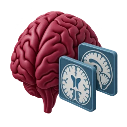
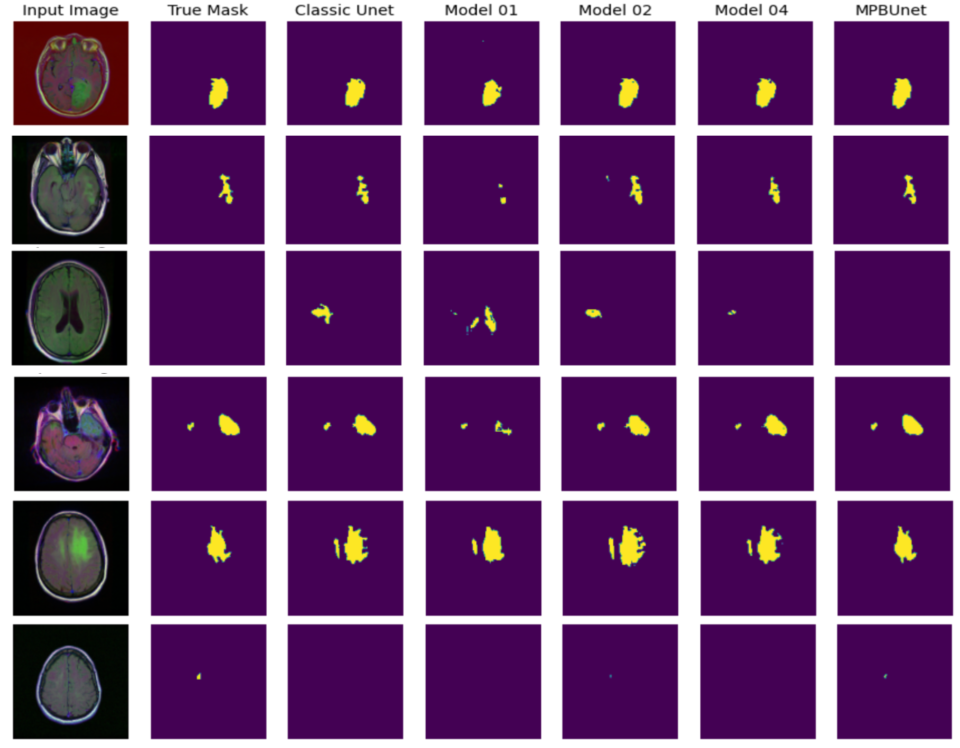

Real-time AI-powered monitoring for energy-efficient scheduling in multi-node heterogeneous systems
AI-powered monitoring for energy-aware task scheduling across heterogeneous computing nodes.
Future Generation Computer SystemsRead on ORBI
University of Mons · ILIA
We develop AI and computer vision methods for medical imaging, connected agriculture and secure distributed systems.
Faculty of Engineering Informatique, Logiciel et Intelligence artificielle

Bringing brain imaging and clinical data together, with evaluation across independent cohorts.
Combining sensors, satellite imagery and weather data to support agricultural decisions.
Exploring blockchain and multi-party computation for secure, decentralised federated learning.
Research output
AI-powered monitoring for energy-aware task scheduling across heterogeneous computing nodes.
Evaluating missing-data methods through accuracy, temporal consistency and demographic fairness in Parkinson’s research.
A survey of AI-based security approaches for devices in the Internet of Medical Things.
Combining 3D MRI and clinical data with transformers for Alzheimer’s classification across independent cohorts.
Selection verified against UMONS / ORBI records on .
Research in practice

Published research · Medical imaging
MPB-UNet compares predicted tumour boundaries with reference masks on brain MRI. Explore the method and test examples published by Fatma Chahbar, Medjeded Merati and Saïd Mahmoudi.
MPB-UNet compares predicted tumour boundaries with reference masks on brain MRI. Explore the published method and test examples.
Read the open-access paperOur people
Faculty, researchers and PhD students working together on AI and intelligent systems.
Meet the whole teamCollaborate with SMART’ILIA
For research collaborations, student projects and enquiries, get in touch with our team at the University of Mons.
Contact the labUniversity of Mons
Faculty of Engineering · ILIA